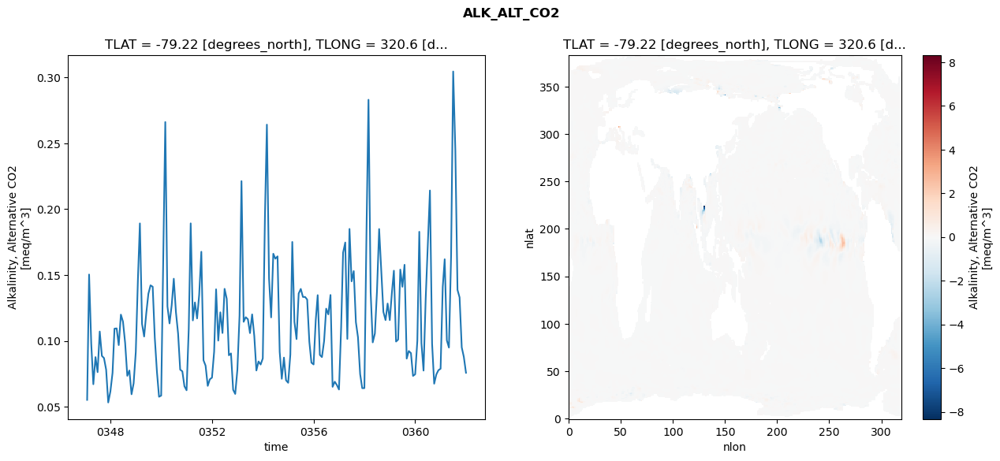
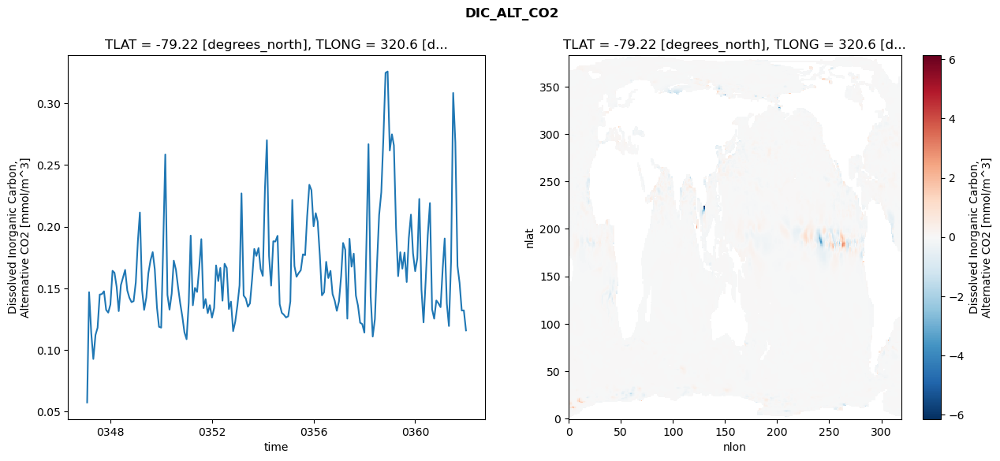
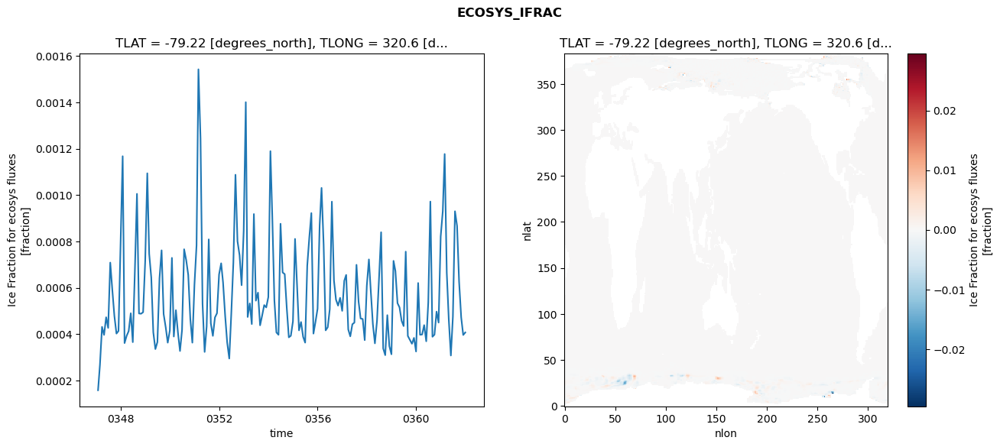
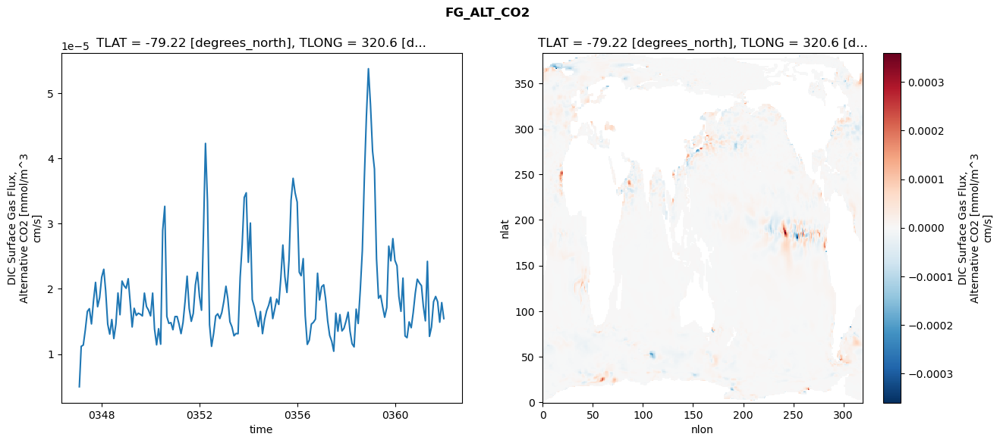

glb-dor_North_Atlantic_basin_001_1999-01-01_00004#
Show code cell source Hide code cell source
import xarray as xr
import matplotlib.pyplot as plt
Show code cell source Hide code cell source
zarr_store = "/path/to/zarr/store"
# Parameters
zarr_store = "/global/cfs/projectdirs/m4746/Projects/Ocean-CDR-Atlas-v0/data/validation/smyle.cdr-atlas-v0.glb-dor_North_Atlantic_basin_001_1999-01-01_00004.001.validation.zarr"
Show code cell source Hide code cell source
%%time
ds_o = xr.open_zarr(zarr_store).compute()
ds_o
CPU times: user 598 ms, sys: 415 ms, total: 1.01 s
Wall time: 1.15 s
<xarray.Dataset> Size: 2MB
Dimensions: (nlat: 384, nlon: 320, time: 180)
Coordinates:
TLAT float64 8B -79.22
TLONG float64 8B 320.6
ULAT float64 8B -78.95
ULONG float64 8B 321.1
* time (time) object 1kB 0347-02-01 00:00:00 ... 0362-01-01 0...
z_t float32 4B 500.0
Dimensions without coordinates: nlat, nlon
Data variables:
ALK_ALT_CO2_diff (nlat, nlon) float32 492kB nan nan nan ... nan nan nan
ALK_ALT_CO2_rmse (time) float64 1kB 0.05533 0.1504 ... 0.08794 0.07589
DIC_ALT_CO2_diff (nlat, nlon) float32 492kB nan nan nan ... nan nan nan
DIC_ALT_CO2_rmse (time) float64 1kB 0.05747 0.1469 ... 0.1321 0.1159
ECOSYS_IFRAC_diff (nlat, nlon) float32 492kB nan nan nan ... nan nan nan
ECOSYS_IFRAC_rmse (time) float64 1kB 0.0001578 0.0002674 ... 0.000407
FG_ALT_CO2_diff (nlat, nlon) float32 492kB nan nan nan ... nan nan nan
FG_ALT_CO2_rmse (time) float64 1kB 4.986e-06 1.118e-05 ... 1.543e-05xarray.Dataset
- nlat: 384
- nlon: 320
- time: 180
- TLAT()float64-79.22
- long_name :
- array of t-grid latitudes
- units :
- degrees_north
array(-79.22052261)
- TLONG()float64320.6
- long_name :
- array of t-grid longitudes
- units :
- degrees_east
array(320.56250892)
- ULAT()float64-78.95
- long_name :
- array of u-grid latitudes
- units :
- degrees_north
array(-78.95289509)
- ULONG()float64321.1
- long_name :
- array of u-grid longitudes
- units :
- degrees_east
array(321.12500894)
- time(time)object0347-02-01 00:00:00 ... 0362-01-...
- bounds :
- time_bound
- long_name :
- time
array([cftime.DatetimeNoLeap(347, 2, 1, 0, 0, 0, 0, has_year_zero=True), cftime.DatetimeNoLeap(347, 3, 1, 0, 0, 0, 0, has_year_zero=True), cftime.DatetimeNoLeap(347, 4, 1, 0, 0, 0, 0, has_year_zero=True), cftime.DatetimeNoLeap(347, 5, 1, 0, 0, 0, 0, has_year_zero=True), cftime.DatetimeNoLeap(347, 6, 1, 0, 0, 0, 0, has_year_zero=True), cftime.DatetimeNoLeap(347, 7, 1, 0, 0, 0, 0, has_year_zero=True), cftime.DatetimeNoLeap(347, 8, 1, 0, 0, 0, 0, has_year_zero=True), cftime.DatetimeNoLeap(347, 9, 1, 0, 0, 0, 0, has_year_zero=True), cftime.DatetimeNoLeap(347, 10, 1, 0, 0, 0, 0, has_year_zero=True), cftime.DatetimeNoLeap(347, 11, 1, 0, 0, 0, 0, has_year_zero=True), cftime.DatetimeNoLeap(347, 12, 1, 0, 0, 0, 0, has_year_zero=True), cftime.DatetimeNoLeap(348, 1, 1, 0, 0, 0, 0, has_year_zero=True), cftime.DatetimeNoLeap(348, 2, 1, 0, 0, 0, 0, has_year_zero=True), cftime.DatetimeNoLeap(348, 3, 1, 0, 0, 0, 0, has_year_zero=True), cftime.DatetimeNoLeap(348, 4, 1, 0, 0, 0, 0, has_year_zero=True), cftime.DatetimeNoLeap(348, 5, 1, 0, 0, 0, 0, has_year_zero=True), cftime.DatetimeNoLeap(348, 6, 1, 0, 0, 0, 0, has_year_zero=True), cftime.DatetimeNoLeap(348, 7, 1, 0, 0, 0, 0, has_year_zero=True), cftime.DatetimeNoLeap(348, 8, 1, 0, 0, 0, 0, has_year_zero=True), cftime.DatetimeNoLeap(348, 9, 1, 0, 0, 0, 0, has_year_zero=True), cftime.DatetimeNoLeap(348, 10, 1, 0, 0, 0, 0, has_year_zero=True), cftime.DatetimeNoLeap(348, 11, 1, 0, 0, 0, 0, has_year_zero=True), cftime.DatetimeNoLeap(348, 12, 1, 0, 0, 0, 0, has_year_zero=True), cftime.DatetimeNoLeap(349, 1, 1, 0, 0, 0, 0, has_year_zero=True), cftime.DatetimeNoLeap(349, 2, 1, 0, 0, 0, 0, has_year_zero=True), cftime.DatetimeNoLeap(349, 3, 1, 0, 0, 0, 0, has_year_zero=True), cftime.DatetimeNoLeap(349, 4, 1, 0, 0, 0, 0, has_year_zero=True), cftime.DatetimeNoLeap(349, 5, 1, 0, 0, 0, 0, has_year_zero=True), cftime.DatetimeNoLeap(349, 6, 1, 0, 0, 0, 0, has_year_zero=True), cftime.DatetimeNoLeap(349, 7, 1, 0, 0, 0, 0, has_year_zero=True), cftime.DatetimeNoLeap(349, 8, 1, 0, 0, 0, 0, has_year_zero=True), cftime.DatetimeNoLeap(349, 9, 1, 0, 0, 0, 0, has_year_zero=True), cftime.DatetimeNoLeap(349, 10, 1, 0, 0, 0, 0, has_year_zero=True), cftime.DatetimeNoLeap(349, 11, 1, 0, 0, 0, 0, has_year_zero=True), cftime.DatetimeNoLeap(349, 12, 1, 0, 0, 0, 0, has_year_zero=True), cftime.DatetimeNoLeap(350, 1, 1, 0, 0, 0, 0, has_year_zero=True), cftime.DatetimeNoLeap(350, 2, 1, 0, 0, 0, 0, has_year_zero=True), cftime.DatetimeNoLeap(350, 3, 1, 0, 0, 0, 0, has_year_zero=True), cftime.DatetimeNoLeap(350, 4, 1, 0, 0, 0, 0, has_year_zero=True), cftime.DatetimeNoLeap(350, 5, 1, 0, 0, 0, 0, has_year_zero=True), cftime.DatetimeNoLeap(350, 6, 1, 0, 0, 0, 0, has_year_zero=True), cftime.DatetimeNoLeap(350, 7, 1, 0, 0, 0, 0, has_year_zero=True), cftime.DatetimeNoLeap(350, 8, 1, 0, 0, 0, 0, has_year_zero=True), cftime.DatetimeNoLeap(350, 9, 1, 0, 0, 0, 0, has_year_zero=True), cftime.DatetimeNoLeap(350, 10, 1, 0, 0, 0, 0, has_year_zero=True), cftime.DatetimeNoLeap(350, 11, 1, 0, 0, 0, 0, has_year_zero=True), cftime.DatetimeNoLeap(350, 12, 1, 0, 0, 0, 0, has_year_zero=True), cftime.DatetimeNoLeap(351, 1, 1, 0, 0, 0, 0, has_year_zero=True), cftime.DatetimeNoLeap(351, 2, 1, 0, 0, 0, 0, has_year_zero=True), cftime.DatetimeNoLeap(351, 3, 1, 0, 0, 0, 0, has_year_zero=True), cftime.DatetimeNoLeap(351, 4, 1, 0, 0, 0, 0, has_year_zero=True), cftime.DatetimeNoLeap(351, 5, 1, 0, 0, 0, 0, has_year_zero=True), cftime.DatetimeNoLeap(351, 6, 1, 0, 0, 0, 0, has_year_zero=True), cftime.DatetimeNoLeap(351, 7, 1, 0, 0, 0, 0, has_year_zero=True), cftime.DatetimeNoLeap(351, 8, 1, 0, 0, 0, 0, has_year_zero=True), cftime.DatetimeNoLeap(351, 9, 1, 0, 0, 0, 0, has_year_zero=True), cftime.DatetimeNoLeap(351, 10, 1, 0, 0, 0, 0, has_year_zero=True), cftime.DatetimeNoLeap(351, 11, 1, 0, 0, 0, 0, has_year_zero=True), cftime.DatetimeNoLeap(351, 12, 1, 0, 0, 0, 0, has_year_zero=True), cftime.DatetimeNoLeap(352, 1, 1, 0, 0, 0, 0, has_year_zero=True), cftime.DatetimeNoLeap(352, 2, 1, 0, 0, 0, 0, has_year_zero=True), cftime.DatetimeNoLeap(352, 3, 1, 0, 0, 0, 0, has_year_zero=True), cftime.DatetimeNoLeap(352, 4, 1, 0, 0, 0, 0, has_year_zero=True), cftime.DatetimeNoLeap(352, 5, 1, 0, 0, 0, 0, has_year_zero=True), cftime.DatetimeNoLeap(352, 6, 1, 0, 0, 0, 0, has_year_zero=True), cftime.DatetimeNoLeap(352, 7, 1, 0, 0, 0, 0, has_year_zero=True), cftime.DatetimeNoLeap(352, 8, 1, 0, 0, 0, 0, has_year_zero=True), cftime.DatetimeNoLeap(352, 9, 1, 0, 0, 0, 0, has_year_zero=True), cftime.DatetimeNoLeap(352, 10, 1, 0, 0, 0, 0, has_year_zero=True), cftime.DatetimeNoLeap(352, 11, 1, 0, 0, 0, 0, has_year_zero=True), cftime.DatetimeNoLeap(352, 12, 1, 0, 0, 0, 0, has_year_zero=True), cftime.DatetimeNoLeap(353, 1, 1, 0, 0, 0, 0, has_year_zero=True), cftime.DatetimeNoLeap(353, 2, 1, 0, 0, 0, 0, has_year_zero=True), cftime.DatetimeNoLeap(353, 3, 1, 0, 0, 0, 0, has_year_zero=True), cftime.DatetimeNoLeap(353, 4, 1, 0, 0, 0, 0, has_year_zero=True), cftime.DatetimeNoLeap(353, 5, 1, 0, 0, 0, 0, has_year_zero=True), cftime.DatetimeNoLeap(353, 6, 1, 0, 0, 0, 0, has_year_zero=True), cftime.DatetimeNoLeap(353, 7, 1, 0, 0, 0, 0, has_year_zero=True), cftime.DatetimeNoLeap(353, 8, 1, 0, 0, 0, 0, has_year_zero=True), cftime.DatetimeNoLeap(353, 9, 1, 0, 0, 0, 0, has_year_zero=True), cftime.DatetimeNoLeap(353, 10, 1, 0, 0, 0, 0, has_year_zero=True), cftime.DatetimeNoLeap(353, 11, 1, 0, 0, 0, 0, has_year_zero=True), cftime.DatetimeNoLeap(353, 12, 1, 0, 0, 0, 0, has_year_zero=True), cftime.DatetimeNoLeap(354, 1, 1, 0, 0, 0, 0, has_year_zero=True), cftime.DatetimeNoLeap(354, 2, 1, 0, 0, 0, 0, has_year_zero=True), cftime.DatetimeNoLeap(354, 3, 1, 0, 0, 0, 0, has_year_zero=True), cftime.DatetimeNoLeap(354, 4, 1, 0, 0, 0, 0, has_year_zero=True), cftime.DatetimeNoLeap(354, 5, 1, 0, 0, 0, 0, has_year_zero=True), cftime.DatetimeNoLeap(354, 6, 1, 0, 0, 0, 0, has_year_zero=True), cftime.DatetimeNoLeap(354, 7, 1, 0, 0, 0, 0, has_year_zero=True), cftime.DatetimeNoLeap(354, 8, 1, 0, 0, 0, 0, has_year_zero=True), cftime.DatetimeNoLeap(354, 9, 1, 0, 0, 0, 0, has_year_zero=True), cftime.DatetimeNoLeap(354, 10, 1, 0, 0, 0, 0, has_year_zero=True), cftime.DatetimeNoLeap(354, 11, 1, 0, 0, 0, 0, has_year_zero=True), cftime.DatetimeNoLeap(354, 12, 1, 0, 0, 0, 0, has_year_zero=True), cftime.DatetimeNoLeap(355, 1, 1, 0, 0, 0, 0, has_year_zero=True), cftime.DatetimeNoLeap(355, 2, 1, 0, 0, 0, 0, has_year_zero=True), cftime.DatetimeNoLeap(355, 3, 1, 0, 0, 0, 0, has_year_zero=True), cftime.DatetimeNoLeap(355, 4, 1, 0, 0, 0, 0, has_year_zero=True), cftime.DatetimeNoLeap(355, 5, 1, 0, 0, 0, 0, has_year_zero=True), cftime.DatetimeNoLeap(355, 6, 1, 0, 0, 0, 0, has_year_zero=True), cftime.DatetimeNoLeap(355, 7, 1, 0, 0, 0, 0, has_year_zero=True), cftime.DatetimeNoLeap(355, 8, 1, 0, 0, 0, 0, has_year_zero=True), cftime.DatetimeNoLeap(355, 9, 1, 0, 0, 0, 0, has_year_zero=True), cftime.DatetimeNoLeap(355, 10, 1, 0, 0, 0, 0, has_year_zero=True), cftime.DatetimeNoLeap(355, 11, 1, 0, 0, 0, 0, has_year_zero=True), cftime.DatetimeNoLeap(355, 12, 1, 0, 0, 0, 0, has_year_zero=True), cftime.DatetimeNoLeap(356, 1, 1, 0, 0, 0, 0, has_year_zero=True), cftime.DatetimeNoLeap(356, 2, 1, 0, 0, 0, 0, has_year_zero=True), cftime.DatetimeNoLeap(356, 3, 1, 0, 0, 0, 0, has_year_zero=True), cftime.DatetimeNoLeap(356, 4, 1, 0, 0, 0, 0, has_year_zero=True), cftime.DatetimeNoLeap(356, 5, 1, 0, 0, 0, 0, has_year_zero=True), cftime.DatetimeNoLeap(356, 6, 1, 0, 0, 0, 0, has_year_zero=True), cftime.DatetimeNoLeap(356, 7, 1, 0, 0, 0, 0, has_year_zero=True), cftime.DatetimeNoLeap(356, 8, 1, 0, 0, 0, 0, has_year_zero=True), cftime.DatetimeNoLeap(356, 9, 1, 0, 0, 0, 0, has_year_zero=True), cftime.DatetimeNoLeap(356, 10, 1, 0, 0, 0, 0, has_year_zero=True), cftime.DatetimeNoLeap(356, 11, 1, 0, 0, 0, 0, has_year_zero=True), cftime.DatetimeNoLeap(356, 12, 1, 0, 0, 0, 0, has_year_zero=True), cftime.DatetimeNoLeap(357, 1, 1, 0, 0, 0, 0, has_year_zero=True), cftime.DatetimeNoLeap(357, 2, 1, 0, 0, 0, 0, has_year_zero=True), cftime.DatetimeNoLeap(357, 3, 1, 0, 0, 0, 0, has_year_zero=True), cftime.DatetimeNoLeap(357, 4, 1, 0, 0, 0, 0, has_year_zero=True), cftime.DatetimeNoLeap(357, 5, 1, 0, 0, 0, 0, has_year_zero=True), cftime.DatetimeNoLeap(357, 6, 1, 0, 0, 0, 0, has_year_zero=True), cftime.DatetimeNoLeap(357, 7, 1, 0, 0, 0, 0, has_year_zero=True), cftime.DatetimeNoLeap(357, 8, 1, 0, 0, 0, 0, has_year_zero=True), cftime.DatetimeNoLeap(357, 9, 1, 0, 0, 0, 0, has_year_zero=True), cftime.DatetimeNoLeap(357, 10, 1, 0, 0, 0, 0, has_year_zero=True), cftime.DatetimeNoLeap(357, 11, 1, 0, 0, 0, 0, has_year_zero=True), cftime.DatetimeNoLeap(357, 12, 1, 0, 0, 0, 0, has_year_zero=True), cftime.DatetimeNoLeap(358, 1, 1, 0, 0, 0, 0, has_year_zero=True), cftime.DatetimeNoLeap(358, 2, 1, 0, 0, 0, 0, has_year_zero=True), cftime.DatetimeNoLeap(358, 3, 1, 0, 0, 0, 0, has_year_zero=True), cftime.DatetimeNoLeap(358, 4, 1, 0, 0, 0, 0, has_year_zero=True), cftime.DatetimeNoLeap(358, 5, 1, 0, 0, 0, 0, has_year_zero=True), cftime.DatetimeNoLeap(358, 6, 1, 0, 0, 0, 0, has_year_zero=True), cftime.DatetimeNoLeap(358, 7, 1, 0, 0, 0, 0, has_year_zero=True), cftime.DatetimeNoLeap(358, 8, 1, 0, 0, 0, 0, has_year_zero=True), cftime.DatetimeNoLeap(358, 9, 1, 0, 0, 0, 0, has_year_zero=True), cftime.DatetimeNoLeap(358, 10, 1, 0, 0, 0, 0, has_year_zero=True), cftime.DatetimeNoLeap(358, 11, 1, 0, 0, 0, 0, has_year_zero=True), cftime.DatetimeNoLeap(358, 12, 1, 0, 0, 0, 0, has_year_zero=True), cftime.DatetimeNoLeap(359, 1, 1, 0, 0, 0, 0, has_year_zero=True), cftime.DatetimeNoLeap(359, 2, 1, 0, 0, 0, 0, has_year_zero=True), cftime.DatetimeNoLeap(359, 3, 1, 0, 0, 0, 0, has_year_zero=True), cftime.DatetimeNoLeap(359, 4, 1, 0, 0, 0, 0, has_year_zero=True), cftime.DatetimeNoLeap(359, 5, 1, 0, 0, 0, 0, has_year_zero=True), cftime.DatetimeNoLeap(359, 6, 1, 0, 0, 0, 0, has_year_zero=True), cftime.DatetimeNoLeap(359, 7, 1, 0, 0, 0, 0, has_year_zero=True), cftime.DatetimeNoLeap(359, 8, 1, 0, 0, 0, 0, has_year_zero=True), cftime.DatetimeNoLeap(359, 9, 1, 0, 0, 0, 0, has_year_zero=True), cftime.DatetimeNoLeap(359, 10, 1, 0, 0, 0, 0, has_year_zero=True), cftime.DatetimeNoLeap(359, 11, 1, 0, 0, 0, 0, has_year_zero=True), cftime.DatetimeNoLeap(359, 12, 1, 0, 0, 0, 0, has_year_zero=True), cftime.DatetimeNoLeap(360, 1, 1, 0, 0, 0, 0, has_year_zero=True), cftime.DatetimeNoLeap(360, 2, 1, 0, 0, 0, 0, has_year_zero=True), cftime.DatetimeNoLeap(360, 3, 1, 0, 0, 0, 0, has_year_zero=True), cftime.DatetimeNoLeap(360, 4, 1, 0, 0, 0, 0, has_year_zero=True), cftime.DatetimeNoLeap(360, 5, 1, 0, 0, 0, 0, has_year_zero=True), cftime.DatetimeNoLeap(360, 6, 1, 0, 0, 0, 0, has_year_zero=True), cftime.DatetimeNoLeap(360, 7, 1, 0, 0, 0, 0, has_year_zero=True), cftime.DatetimeNoLeap(360, 8, 1, 0, 0, 0, 0, has_year_zero=True), cftime.DatetimeNoLeap(360, 9, 1, 0, 0, 0, 0, has_year_zero=True), cftime.DatetimeNoLeap(360, 10, 1, 0, 0, 0, 0, has_year_zero=True), cftime.DatetimeNoLeap(360, 11, 1, 0, 0, 0, 0, has_year_zero=True), cftime.DatetimeNoLeap(360, 12, 1, 0, 0, 0, 0, has_year_zero=True), cftime.DatetimeNoLeap(361, 1, 1, 0, 0, 0, 0, has_year_zero=True), cftime.DatetimeNoLeap(361, 2, 1, 0, 0, 0, 0, has_year_zero=True), cftime.DatetimeNoLeap(361, 3, 1, 0, 0, 0, 0, has_year_zero=True), cftime.DatetimeNoLeap(361, 4, 1, 0, 0, 0, 0, has_year_zero=True), cftime.DatetimeNoLeap(361, 5, 1, 0, 0, 0, 0, has_year_zero=True), cftime.DatetimeNoLeap(361, 6, 1, 0, 0, 0, 0, has_year_zero=True), cftime.DatetimeNoLeap(361, 7, 1, 0, 0, 0, 0, has_year_zero=True), cftime.DatetimeNoLeap(361, 8, 1, 0, 0, 0, 0, has_year_zero=True), cftime.DatetimeNoLeap(361, 9, 1, 0, 0, 0, 0, has_year_zero=True), cftime.DatetimeNoLeap(361, 10, 1, 0, 0, 0, 0, has_year_zero=True), cftime.DatetimeNoLeap(361, 11, 1, 0, 0, 0, 0, has_year_zero=True), cftime.DatetimeNoLeap(361, 12, 1, 0, 0, 0, 0, has_year_zero=True), cftime.DatetimeNoLeap(362, 1, 1, 0, 0, 0, 0, has_year_zero=True)], dtype=object) - z_t()float32500.0
- long_name :
- depth from surface to midpoint of layer
- positive :
- down
- units :
- centimeters
- valid_max :
- 537500.0
- valid_min :
- 500.0
array(500., dtype=float32)
- ALK_ALT_CO2_diff(nlat, nlon)float32nan nan nan nan ... nan nan nan nan
- cell_methods :
- time: mean
- grid_loc :
- 3111
- long_name :
- Alkalinity, Alternative CO2
- units :
- meq/m^3
array([[ nan, nan, nan, ..., nan, nan, nan], [ nan, nan, nan, ..., nan, nan, nan], [-0.00170898, -0.00488281, -0.0012207 , ..., nan, nan, nan], ..., [ nan, nan, nan, ..., nan, nan, nan], [ nan, nan, nan, ..., nan, nan, nan], [ nan, nan, nan, ..., nan, nan, nan]], dtype=float32) - ALK_ALT_CO2_rmse(time)float640.05533 0.1504 ... 0.08794 0.07589
- cell_methods :
- time: mean
- grid_loc :
- 3111
- long_name :
- Alkalinity, Alternative CO2
- units :
- meq/m^3
array([0.05532698, 0.15040586, 0.09780494, 0.06719354, 0.08776321, 0.07635772, 0.1071586 , 0.0886695 , 0.0870559 , 0.0782356 , 0.05336017, 0.06166006, 0.07581919, 0.10934992, 0.10954455, 0.09688335, 0.1199992 , 0.11466666, 0.09846845, 0.07356953, 0.07764502, 0.05959328, 0.0678569 , 0.09162304, 0.14738057, 0.18917844, 0.1129106 , 0.10340253, 0.12112322, 0.13579809, 0.14220476, 0.14114054, 0.1024757 , 0.07660876, 0.05770937, 0.05856498, 0.16984932, 0.26605624, 0.1262039 , 0.1133173 , 0.1270803 , 0.14721545, 0.12182839, 0.10555475, 0.07825494, 0.07697664, 0.06567207, 0.06260907, 0.10922646, 0.1892031 , 0.11559998, 0.12922704, 0.11709347, 0.13501757, 0.16766185, 0.08536736, 0.08126663, 0.06594867, 0.07091811, 0.07220786, 0.09193992, 0.13917949, 0.10027791, 0.12172896, 0.10603987, 0.13954117, 0.13195312, 0.0891359 , 0.0905745 , 0.06300234, 0.05983159, 0.07823626, 0.11922525, 0.22124409, 0.11453638, 0.11802796, 0.11650077, 0.10598501, 0.12016069, 0.10369951, 0.07762325, 0.0844517 , 0.08212915, 0.0867737 , 0.19438225, 0.26408602, 0.14742653, 0.11788887, 0.1661685 , 0.16241674, 0.16419505, 0.09169612, 0.07132906, 0.0873889 , 0.07018137, 0.0682853 , 0.08971341, 0.17510479, 0.11441898, 0.10142881, 0.13604485, 0.13947737, 0.13339265, 0.13338506, 0.13140552, 0.09938847, 0.08355122, 0.08219223, 0.11578295, 0.1347586 , 0.08940733, 0.08778816, 0.09991894, 0.12452891, 0.12017542, 0.13488337, 0.06521529, 0.06911806, 0.06666687, 0.06317497, 0.11038442, 0.16699625, 0.17468195, 0.10156885, 0.18497672, 0.14523221, 0.15299509, 0.11427085, 0.10282331, 0.07488175, 0.06419072, 0.06422159, 0.18565929, 0.28295594, 0.13708522, 0.09893614, 0.10570054, 0.13771023, 0.18491129, 0.15331964, 0.12207785, 0.11581429, 0.12838622, 0.11581282, 0.13704867, 0.15330509, 0.0995634 , 0.10104971, 0.15415794, 0.14111112, 0.15778755, 0.08664945, 0.09237606, 0.09079054, 0.07351639, 0.07472254, 0.1002056 , 0.18281846, 0.09830499, 0.07753985, 0.13217815, 0.17273696, 0.21413891, 0.09788774, 0.06760976, 0.07463518, 0.07782311, 0.07895106, 0.14101177, 0.16197627, 0.10045192, 0.0950106 , 0.16469635, 0.30439175, 0.2447902 , 0.13876208, 0.13304306, 0.09515232, 0.0879372 , 0.0758907 ]) - DIC_ALT_CO2_diff(nlat, nlon)float32nan nan nan nan ... nan nan nan nan
- cell_methods :
- time: mean
- grid_loc :
- 3111
- long_name :
- Dissolved Inorganic Carbon, Alternative CO2
- units :
- mmol/m^3
array([[ nan, nan, nan, ..., nan, nan, nan], [ nan, nan, nan, ..., nan, nan, nan], [-0.00170898, 0.00097656, 0.01123047, ..., nan, nan, nan], ..., [ nan, nan, nan, ..., nan, nan, nan], [ nan, nan, nan, ..., nan, nan, nan], [ nan, nan, nan, ..., nan, nan, nan]], dtype=float32) - DIC_ALT_CO2_rmse(time)float640.05747 0.1469 ... 0.1321 0.1159
- cell_methods :
- time: mean
- grid_loc :
- 3111
- long_name :
- Dissolved Inorganic Carbon, Alternative CO2
- units :
- mmol/m^3
array([0.05746536, 0.14685436, 0.11372491, 0.09270145, 0.11219852, 0.11803378, 0.14492176, 0.14534077, 0.14758696, 0.13253612, 0.13029324, 0.13677254, 0.16420072, 0.16259805, 0.15114531, 0.1315004 , 0.15259727, 0.15856437, 0.16494056, 0.14826216, 0.14235737, 0.13878082, 0.13960149, 0.15479159, 0.18911865, 0.21143688, 0.14883476, 0.13251853, 0.14246081, 0.1623373 , 0.17271785, 0.17934188, 0.16539071, 0.13457663, 0.1187865 , 0.11812595, 0.19004341, 0.25849445, 0.14463261, 0.13271575, 0.14562026, 0.17240657, 0.16512422, 0.15071369, 0.13806413, 0.12707152, 0.11434661, 0.10871079, 0.13827696, 0.19272703, 0.13623502, 0.15034061, 0.14703355, 0.16630382, 0.1898618 , 0.13396863, 0.14131653, 0.12990114, 0.13633685, 0.12622478, 0.13404186, 0.16856229, 0.15587301, 0.16651112, 0.13997037, 0.16990571, 0.16649234, 0.13322456, 0.13924678, 0.11528963, 0.12286 , 0.13607153, 0.15236284, 0.22693029, 0.14413284, 0.14183914, 0.13508563, 0.13780575, 0.15782278, 0.18195153, 0.17625249, 0.18269067, 0.16555817, 0.16008964, 0.23056467, 0.27002383, 0.17623664, 0.15218435, 0.18814322, 0.18791546, 0.19257131, 0.13711819, 0.13017657, 0.12853899, 0.1263446 , 0.12730605, 0.13927395, 0.22161348, 0.16803699, 0.1593634 , 0.16238178, 0.1646329 , 0.17756479, 0.17683803, 0.20859202, 0.23393371, 0.22953698, 0.2002806 , 0.21092192, 0.20406247, 0.17647292, 0.14429384, 0.14678128, 0.17147699, 0.15830501, 0.16414546, 0.14528077, 0.13990716, 0.13174547, 0.13948138, 0.1599311 , 0.18676665, 0.18123919, 0.12541114, 0.19016186, 0.16756991, 0.17809506, 0.14409998, 0.13595879, 0.12209184, 0.12101242, 0.11408716, 0.19088673, 0.26683255, 0.14351592, 0.11087542, 0.12500502, 0.16904818, 0.20951828, 0.22781916, 0.27163301, 0.32462613, 0.32574381, 0.26170657, 0.2747935 , 0.26584006, 0.19898366, 0.15984719, 0.17923824, 0.16592134, 0.178944 , 0.15509131, 0.19054062, 0.20972546, 0.17836101, 0.1639038 , 0.17446748, 0.22246395, 0.14903675, 0.12236473, 0.1565514 , 0.19319195, 0.21909818, 0.13295397, 0.1253963 , 0.14013 , 0.13786517, 0.13471264, 0.16661214, 0.19037436, 0.13745884, 0.11941226, 0.17235475, 0.30836115, 0.26838637, 0.16811174, 0.15435952, 0.13197021, 0.13212466, 0.115873 ]) - ECOSYS_IFRAC_diff(nlat, nlon)float32nan nan nan nan ... nan nan nan nan
- cell_methods :
- time: mean
- grid_loc :
- 2110
- long_name :
- Ice Fraction for ecosys fluxes
- units :
- fraction
array([[ nan, nan, nan, ..., nan, nan, nan], [ nan, nan, nan, ..., nan, nan, nan], [-0.00024426, -0.00024682, -0.00025493, ..., nan, nan, nan], ..., [ nan, nan, nan, ..., nan, nan, nan], [ nan, nan, nan, ..., nan, nan, nan], [ nan, nan, nan, ..., nan, nan, nan]], dtype=float32) - ECOSYS_IFRAC_rmse(time)float640.0001578 0.0002674 ... 0.000407
- cell_methods :
- time: mean
- grid_loc :
- 2110
- long_name :
- Ice Fraction for ecosys fluxes
- units :
- fraction
array([0.00015783, 0.00026745, 0.00043113, 0.00039649, 0.00047254, 0.00042675, 0.00070841, 0.00058903, 0.00047874, 0.00040224, 0.00041339, 0.00079558, 0.00116721, 0.00036133, 0.00039254, 0.00041283, 0.00048975, 0.00036529, 0.00067527, 0.0010049 , 0.00048894, 0.00048791, 0.00049444, 0.00071528, 0.00109356, 0.00074643, 0.00064375, 0.00040758, 0.00033537, 0.00036562, 0.00064122, 0.00076132, 0.00048686, 0.00042931, 0.00036318, 0.00041517, 0.00072874, 0.00038956, 0.00050314, 0.00040729, 0.00032712, 0.00041734, 0.0007659 , 0.00071887, 0.00065526, 0.00046424, 0.00036311, 0.00061288, 0.00078252, 0.00154204, 0.00124422, 0.00053065, 0.00032309, 0.00043309, 0.00080855, 0.00044598, 0.00039241, 0.00047194, 0.00048998, 0.00065752, 0.00070529, 0.00062241, 0.00048019, 0.00036428, 0.00029462, 0.00048785, 0.00070926, 0.00108728, 0.00080081, 0.00074 , 0.00061092, 0.00084582, 0.00140033, 0.0004739 , 0.00053241, 0.00044329, 0.00091777, 0.00054424, 0.00057868, 0.00043795, 0.00047926, 0.00052511, 0.00051503, 0.0005597 , 0.00118912, 0.00090574, 0.00054516, 0.00040715, 0.00039709, 0.00087593, 0.00066589, 0.00065874, 0.00051456, 0.00038606, 0.00039287, 0.00045474, 0.00081057, 0.00061959, 0.00041621, 0.00045212, 0.00038803, 0.00036323, 0.00069481, 0.00081813, 0.00092193, 0.00040223, 0.00045232, 0.00050958, 0.00087043, 0.00103051, 0.00078505, 0.00041617, 0.0004297 , 0.00050777, 0.00097124, 0.0006309 , 0.00054859, 0.00052285, 0.00055649, 0.00050028, 0.00063004, 0.00065528, 0.00041996, 0.00039033, 0.00044257, 0.00044953, 0.00069878, 0.00053957, 0.00046746, 0.00046518, 0.00037399, 0.00060891, 0.00072211, 0.00058534, 0.00044229, 0.0003601 , 0.00045661, 0.0006398 , 0.00083929, 0.00033814, 0.00030918, 0.00048167, 0.00034839, 0.00031307, 0.00071581, 0.00067183, 0.00053356, 0.0005151 , 0.00045731, 0.00043457, 0.00075568, 0.00039201, 0.0003751 , 0.00035842, 0.00038361, 0.00032499, 0.00062031, 0.00039711, 0.00039833, 0.00043874, 0.00036909, 0.00053633, 0.00097166, 0.00038854, 0.00039759, 0.00049687, 0.00044975, 0.00082082, 0.00092982, 0.00117669, 0.00066543, 0.00046305, 0.00030769, 0.00047539, 0.00092979, 0.00086633, 0.00062586, 0.00047206, 0.00039622, 0.000407 ]) - FG_ALT_CO2_diff(nlat, nlon)float32nan nan nan nan ... nan nan nan nan
- cell_methods :
- time: mean
- grid_loc :
- 2110
- long_name :
- DIC Surface Gas Flux, Alternative CO2
- units :
- mmol/m^3 cm/s
array([[ nan, nan, nan, ..., nan, nan, nan], [ nan, nan, nan, ..., nan, nan, nan], [1.2317082e-07, 2.0269181e-07, 2.0870561e-07, ..., nan, nan, nan], ..., [ nan, nan, nan, ..., nan, nan, nan], [ nan, nan, nan, ..., nan, nan, nan], [ nan, nan, nan, ..., nan, nan, nan]], dtype=float32) - FG_ALT_CO2_rmse(time)float644.986e-06 1.118e-05 ... 1.543e-05
- cell_methods :
- time: mean
- grid_loc :
- 2110
- long_name :
- DIC Surface Gas Flux, Alternative CO2
- units :
- mmol/m^3 cm/s
array([4.98587271e-06, 1.11768014e-05, 1.13762391e-05, 1.36876091e-05, 1.65346417e-05, 1.69514447e-05, 1.46182597e-05, 1.81991118e-05, 2.09824097e-05, 1.72565494e-05, 1.86453513e-05, 2.17927532e-05, 2.29968246e-05, 1.97432976e-05, 1.45753101e-05, 1.30514409e-05, 1.52926721e-05, 1.23764168e-05, 1.45844628e-05, 1.93540392e-05, 1.60274485e-05, 2.11855364e-05, 2.04828234e-05, 2.00778477e-05, 2.15413737e-05, 1.81286373e-05, 1.41534611e-05, 1.70134423e-05, 1.59200666e-05, 1.62577971e-05, 1.61034538e-05, 1.58419698e-05, 1.93377890e-05, 1.72765211e-05, 1.67300775e-05, 1.58480657e-05, 1.93378927e-05, 1.38392620e-05, 1.14110503e-05, 1.38808436e-05, 1.15110510e-05, 2.89658053e-05, 3.26421120e-05, 1.57562455e-05, 1.46984644e-05, 1.48179411e-05, 1.37237736e-05, 1.57444980e-05, 1.57506313e-05, 1.46311483e-05, 1.31272103e-05, 1.48477284e-05, 1.81432911e-05, 2.19337316e-05, 1.69798990e-05, 1.50118572e-05, 1.62336640e-05, 2.05632404e-05, 2.25226133e-05, 1.88605493e-05, 1.67188462e-05, 2.82548512e-05, 4.22855327e-05, 3.33902105e-05, 1.44758227e-05, 1.11807138e-05, 1.31577937e-05, 1.58237030e-05, 1.61652692e-05, 1.54405681e-05, 1.63611588e-05, 1.81095455e-05, 2.03861238e-05, 1.84924350e-05, 1.49473841e-05, 1.41782505e-05, 1.27930562e-05, 1.31462472e-05, 1.31148923e-05, 2.17669513e-05, ... 2.67069700e-05, 2.18480017e-05, 1.94432754e-05, 2.44291172e-05, 3.35380533e-05, 3.69316482e-05, 3.47080487e-05, 3.32901955e-05, 2.25436930e-05, 2.20086345e-05, 2.46220053e-05, 1.58703783e-05, 1.14773598e-05, 1.21418333e-05, 1.45932321e-05, 1.48687202e-05, 1.53481319e-05, 2.23816272e-05, 1.82898532e-05, 2.03032664e-05, 2.06095204e-05, 1.85039533e-05, 1.50796926e-05, 1.28602549e-05, 1.19444772e-05, 1.04286916e-05, 1.62629620e-05, 1.34967050e-05, 1.60388784e-05, 1.35451735e-05, 1.39491660e-05, 1.50741971e-05, 1.64113919e-05, 1.35092395e-05, 1.15755122e-05, 1.10941223e-05, 1.68790050e-05, 1.46826460e-05, 1.97784700e-05, 2.58618721e-05, 3.69395860e-05, 4.64660045e-05, 5.37358296e-05, 4.81785336e-05, 4.10830572e-05, 3.83700923e-05, 2.46024801e-05, 1.85514674e-05, 1.89914190e-05, 1.72816062e-05, 1.56409127e-05, 1.71270162e-05, 2.65331523e-05, 2.42835060e-05, 2.76886764e-05, 2.43559567e-05, 2.35240378e-05, 1.88071093e-05, 1.65473441e-05, 2.16349948e-05, 1.27725460e-05, 1.25089182e-05, 1.49249092e-05, 1.40372317e-05, 1.63580808e-05, 1.93410990e-05, 2.14727299e-05, 2.09084077e-05, 2.04774304e-05, 1.73536601e-05, 1.50897500e-05, 2.42052292e-05, 1.27074845e-05, 1.41547607e-05, 1.80239107e-05, 1.88233922e-05, 1.80149613e-05, 1.48818877e-05, 1.78828420e-05, 1.54324206e-05])
- timePandasIndex
PandasIndex(CFTimeIndex([0347-02-01 00:00:00, 0347-03-01 00:00:00, 0347-04-01 00:00:00, 0347-05-01 00:00:00, 0347-06-01 00:00:00, 0347-07-01 00:00:00, 0347-08-01 00:00:00, 0347-09-01 00:00:00, 0347-10-01 00:00:00, 0347-11-01 00:00:00, ... 0361-04-01 00:00:00, 0361-05-01 00:00:00, 0361-06-01 00:00:00, 0361-07-01 00:00:00, 0361-08-01 00:00:00, 0361-09-01 00:00:00, 0361-10-01 00:00:00, 0361-11-01 00:00:00, 0361-12-01 00:00:00, 0362-01-01 00:00:00], dtype='object', length=180, calendar='noleap', freq='MS'))
Show code cell source Hide code cell source
variables = [v[:-5] for v in ds_o.variables if "_rmse" in v]
Show code cell source Hide code cell source
plt.rcParams.update({'figure.max_open_warning': 0})
for v in variables:
fig, axs = plt.subplots(1, 2, figsize=(15, 6))
ds_o[f"{v}_rmse"].plot(ax=axs[0])
ds_o[f"{v}_diff"].plot(ax=axs[1])
plt.suptitle(v, fontweight="bold")



